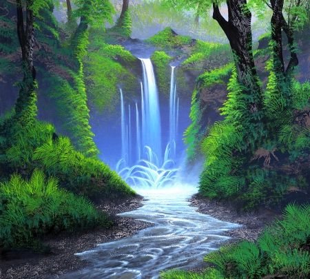
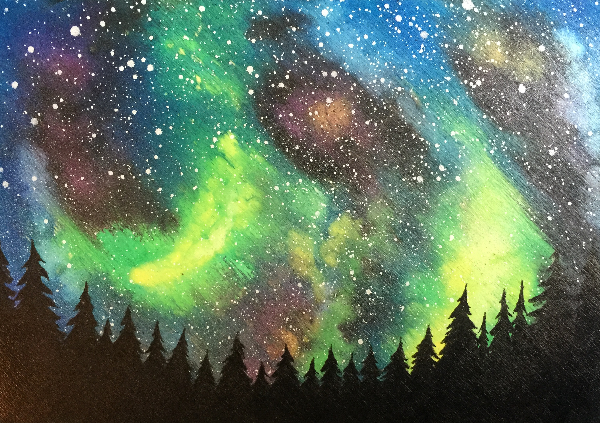
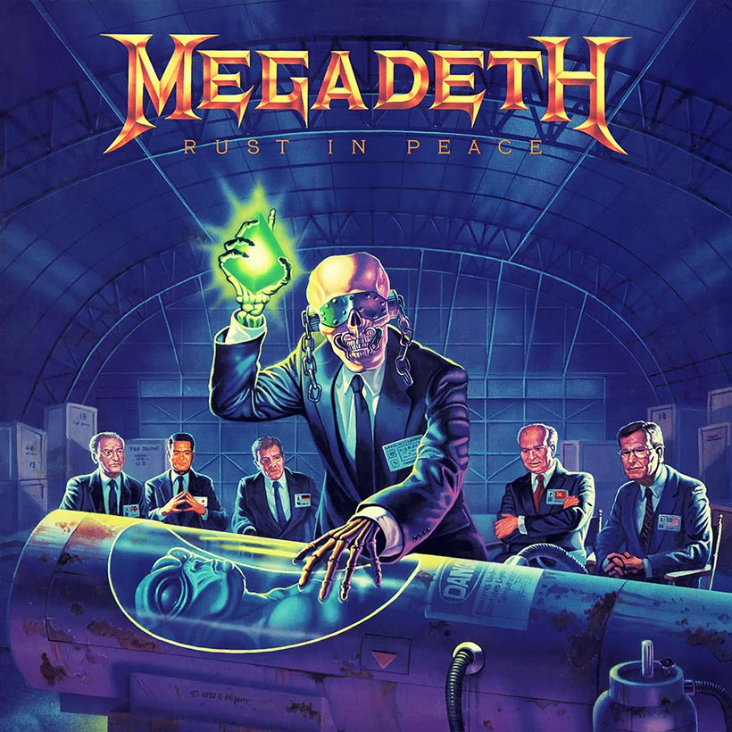
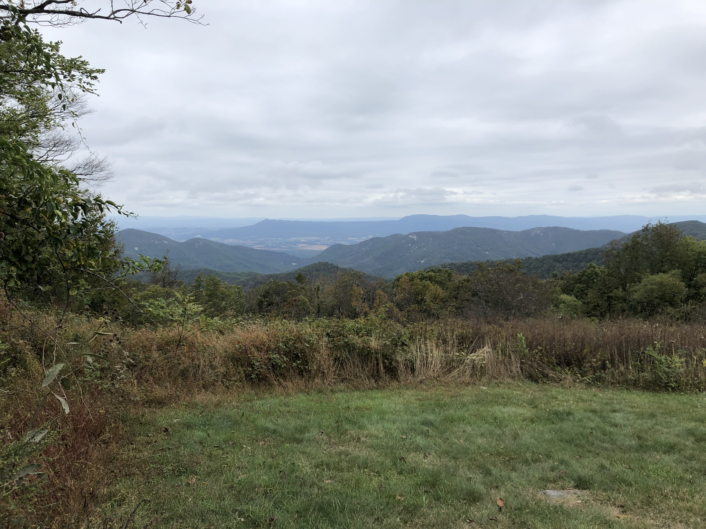

Clay's Story for EX04
My name is Clay, I am a driven designer/musician, and although I am quiet, reserved, and have an introverted personality, I express my voice loud and clear through visual storytelling and music.
Outline of Basic Content
- Title (name, introduction, etc.): The title of the website (being my name) as well as my little self-introduction.
- Portfolio: Visual/Graphic Design - a look at a few of the designs I've done in and outside of school; Web Design - a look at a few of the web related projects I've done for school; Film/Video Projects - a look at a few of the film/video projects I've done for school.
- Hobbies/Interests: Music - A brief description with a few images of what I do as a musician, the ensembles/groups/bands I performed with, the genres of music I listen to, and some of the many live performances I’ve seen of other musical acts; Film - A brief description of why film is one of my favorite mediums as well as some of my favorite directors and movies of all time; Outdoors - A brief description of what activities I partake in in the great outdoors when I have the free time.
- About Me: Some of my basic information and background is included here.
Six Adjectives
- Unobtrusive
- Musical
- Curious
- Overanalytical
- Driven
- Indecisive
Five Visual Samples





Inspirational Website: Jhofffilms
First of all, I apologize for the profane nature of this website. That aspect of it's content is not what I'm taking inspiration from, but with that being said, I do really appreciate the way that they express themselves however they want. Their site shows exactly who they are, what they do, and they don’t try to cater to anyone in particular, they just do what they feel is right and ultimately what they want to do overall. If someone doesn’t like it, then they don’t like it; maybe someone else will, and many do, inlcuding me. I also think that the interface design is slick and the content itself is something that I might want to delve into a little bit in the future.